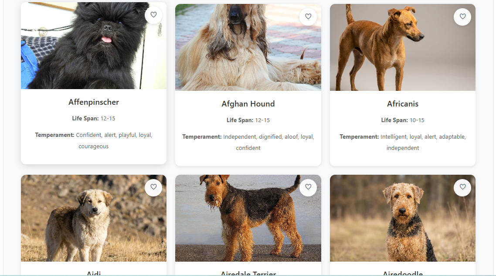

Paw Finder
Pet Adoption Application Case Study
Paw Finder is a pet adoption / finder application that helps people discover animals in need of a home and connect with them. The focus was on making it easy and emotionally engaging to browse available pets, see the details that matter most to an adopter, and take the next step toward adoption. The project practised building a content-heavy browsing experience where imagery and clarity matter as much as functionality.
Project Summary
Project Type
Pet Adoption Web Application
Role
Front-End Developer
Duration
1–2 Weeks
Status
Completed
Focus
Browsing & Connection
Tools
VS Code, Git & GitHub
Project Overview
Paw Finder helps people browse animals available for adoption and get in touch about the ones they connect with. The goal was to design an interface that feels warm and easy to browse, since the content itself — photos and personalities of real animals — is what should carry the emotional weight of the experience.
Development focused on a clean, card-based listing of animals, with clear details for each one, and a straightforward way for a visitor to express interest or reach out. Layout and typography choices were made to keep the interface friendly and uncluttered.
This project demonstrates my ability to build a browsing-focused application where presentation and usability directly affect real-world outcomes for the people and animals involved.
Purpose
Help people discover and connect with animals needing a home.
Responsive
Works across desktop, tablet and mobile devices.
Version Control
Managed using Git and GitHub.
Problem Statement
Pet adoption listings often feel cold or hard to browse, burying photos and personality details under clunky layouts. The objective of this project was to build an interface that puts each animal front and centre, makes key details easy to scan, and removes friction between a visitor feeling a connection and taking the next step.
The challenge was designing a listing and detail view that felt warm and approachable, while still being fast, responsive and easy to navigate on any device.
Project Objectives
Animal Listings
Present available animals in a clean, photo-led card layout.
Animal Details
Show the details an adopter cares about most, clearly and quickly.
Low-Friction Connection
Make it simple for a visitor to express interest or get in touch.
Responsive Design
Ensure the app performs well on desktop, tablet and mobile devices.
Technology Stack
HTML5
Structured semantic and accessible web content.
CSS3
Built a warm, photo-led interface using Flexbox and Grid.
JavaScript
Powered interactive browsing and detail-view behaviour.
Responsive Design
Media queries and flexible layouts for a consistent experience on every device.
Git
Managed version control throughout the development process.
GitHub
Hosted the repository and tracked project progress.
Key Features
Photo-Led Listings
A warm, card-based grid that puts each animal's photo front and centre.
Animal Profiles
Clear details like age, breed and temperament for each animal.
Connect / Enquire
A simple way for visitors to express interest in an animal.
Fully Responsive
A consistent, polished experience across desktop, tablet and mobile screens.
Development Process
Development began with the animal card component, since it's the piece repeated most often across the app and the one visitors interact with first. Getting the photo, name and key details balanced correctly set the tone for the rest of the interface.
From there, the listing grid and detail view were built out using reusable HTML and CSS components, with JavaScript added to handle interactions like viewing more detail about a specific animal without a jarring page reload.
Skills Demonstrated
Card-Based Layout
Reusable Code
UX-Focused Design
Responsive Design
Debugging
Version Control
Challenges Faced
Image-Heavy Layout
Keeping a photo-led grid fast and evenly spaced across screen sizes.
Information Balance
Deciding which animal details mattered most without overwhelming the card.
Responsiveness
Creating layouts that worked consistently across desktop, tablet and mobile devices.
Debugging
Resolving layout shifts caused by inconsistent image sizes and aspect ratios.
Solutions Implemented
Image inconsistency was solved by standardising how photos were cropped and displayed within each card, using CSS object-fit so every animal's photo filled its space consistently regardless of the original image dimensions. Card content was prioritised so the most important details appeared first.
Responsive design techniques such as CSS Grid, Flexbox and media queries ensured the listings stayed usable across devices, and Git and GitHub were used for version control throughout development.
Key Achievements
Complete Adoption Flow
Built a full browsing-to-enquiry experience for adopters.
Warm, Usable Design
Created an interface that feels approachable, not clinical.
Responsive Design
Optimised for desktop, tablet and mobile devices.
Version Control
Used Git and GitHub to manage development and maintain project history.
Testing & Quality Assurance
The app was tested throughout development to confirm animal listings displayed correctly, detail views opened as expected, and the layout remained responsive on different screen sizes.
Browser testing and manual interaction were used to identify layout issues, inconsistent imagery and styling bugs before considering the build complete.
Lessons Learned
Building Paw Finder taught me how much presentation affects usability when the content itself carries emotional weight. Small details — image consistency, spacing, how quickly a visitor can find key information — genuinely change how trustworthy and approachable an interface feels.
The project also strengthened my ability to design and build a card-based, photo-led layout that stays clean and consistent no matter how varied the source images are.
Concrete outcomes: I can now design and build an image-heavy, card-based interface that stays consistent across varied content, and structure a listing-to-detail user flow that's simple to follow.
Reflection
This project reminded me that good front-end work isn't just about functionality — it's about how an interface makes someone feel while they use it. Designing for a cause like pet adoption made that especially clear.
Looking back, I'm proud of how approachable the final interface feels, and this project gave me a better sense of how to design with empathy for both the user and the subject of the content.
Future Improvements
Filters
Let users filter animals by species, age or size.
Favourites
Allow visitors to save animals they're interested in.
Live Shelter Data
Connect to a real shelter database or adoption API.
Enquiry Form Backend
Wire the enquiry form to real email or CRM delivery.
Location Search
Let users find animals near a specific location.
Dark Mode
Give users the ability to switch between light and dark themes.
Project Gallery

Listings View
Project Links
About the Developer
Hi, I'm Nonkululeko Mphoentle Maphanga, an aspiring Full Stack Web Developer with a passion for creating responsive, user-focused web applications. Building Paw Finder taught me how to design with empathy, combining HTML, CSS, JavaScript and Git to create an interface that genuinely helps its users.
My goal is to contribute to innovative software solutions while continuously learning and growing as a developer. I enjoy solving real-world problems through technology and building applications that provide value to users.
Current Focus
Full Stack Web Development
Favourite Focus
UX-Driven, Content-Led Design
Let's Connect
Thank you for viewing this case study. If you'd like to learn more about this project or discuss opportunities, feel free to connect with me.